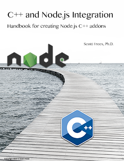

C++ and Node.js Integration
Handbook for creating Node.js C++ addons
© 2016 Scott Frees. All rights reserved.
Contents
Front matter
Chapter 1 - Introduction
Chapter 2 - Understanding the V8 API
Chapter 3 - Basic Integration Patterns
Chapter 4 - Asynchronous Addons
Chapter 5 - Object Wrapping
Chapter 6 - Native Abstractions for Node (NAN)
Chapter 7 - Streaming between Node and C++
Chapter 8 - Publishing Addons
Appendix A - Alternatives to Addons
Appendix B - Buffers
Closing